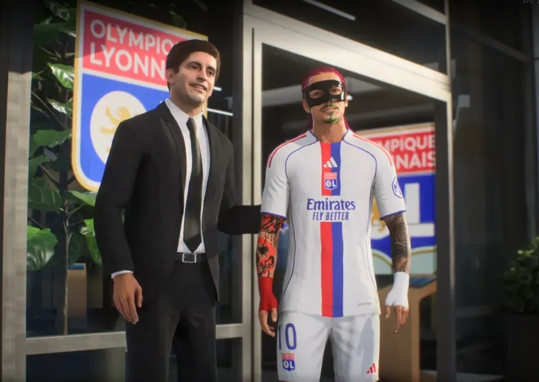
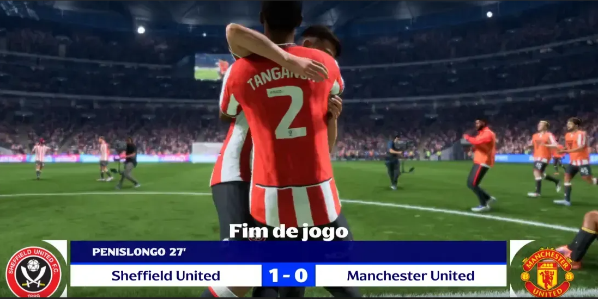
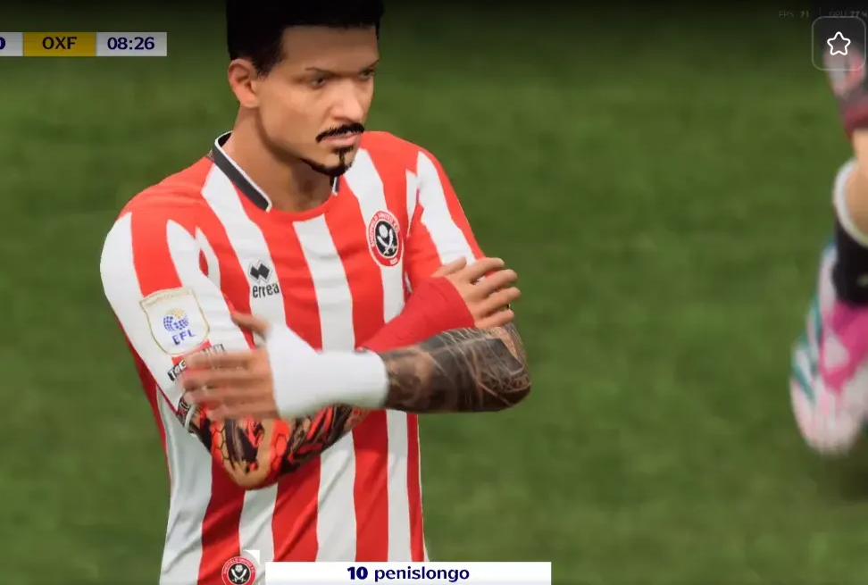
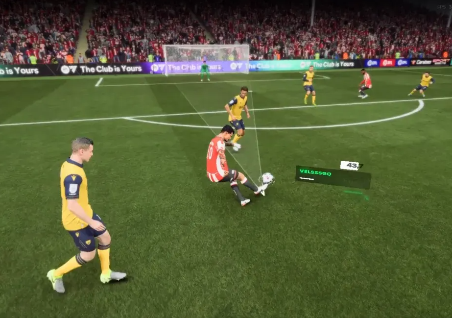

Hat-trick na estreia pelo Lyon!
Atacante marca três vezes e cala o estádio adversário.

Penislongo assina com Lyon
Penislongo depois de uma temporada avassaladora pelo Sheffield United assina com o Lyon e agradece a ambos os times pelas oportunidades

Gol do titulo na carabao cup
No jogo contra o Manchester United valido pela final da Carabao Cup Penislongo crava e garante o campeonato para o Sheffield United.

Penislongo bate recorde em sua primeira temporada como profissional
com 45 gols na EFL championship Penislongo bate o recorde de maior quantidade de gols em uma única temporada da competição

Ex-Sheffield, Penislongo relembra início
Atacante agradece clube inglês pela formação e relembra o gol mais bonito da carreira até o momento.
⚽ 4 gols pela estréia no Lyon ⚽